Detección temprana
Conoce señales de posibles plagas y enfermedades para actuar con anticipación.
AGRONOVA PRESENTA · APLICACIÓN MÓVIL
AgrOm te ayuda a identificar señales de posibles plagas, registrar tus plantas y dar seguimiento a tus cultivos desde el celular.
¿POR QUÉ AGRÓM?
Las manchas, el cambio de color y otros síntomas pueden indicar que una planta necesita atención. Con AgrOm puedes consultar información orientativa y hacer seguimiento de tus cultivos.
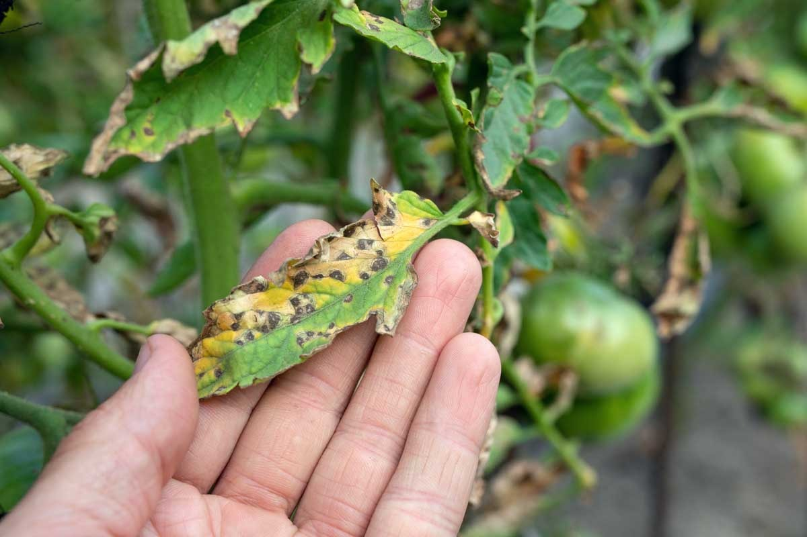
Conoce señales de posibles plagas y enfermedades para actuar con anticipación.
Registra tus plantas y consulta sus cuidados desde el celular.
Continúa registrando información aunque no tengas internet estable.
CUIDA TUS PLANTAS CON AGRÓM
Herramientas pensadas para acompañarte desde la primera revisión hasta el seguimiento de tus plantas.
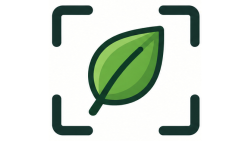
Analiza imágenes de las hojas para orientar la identificación de posibles plagas o enfermedades.

Recibe avisos para revisar cambios importantes en el estado de tus plantas.
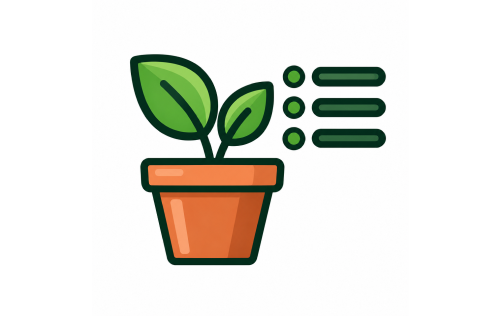
Guarda inspecciones y cuidados en un solo lugar para consultar su evolución.
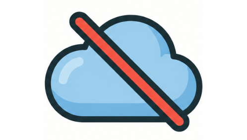
La propuesta prioriza el registro local cuando no cuentas con internet continuo.
DESCUBRE CÓMO FUNCIONA AGRÓM
Desde crear tu cuenta hasta guardar tus datos, AgrOm te acompaña en cada etapa.
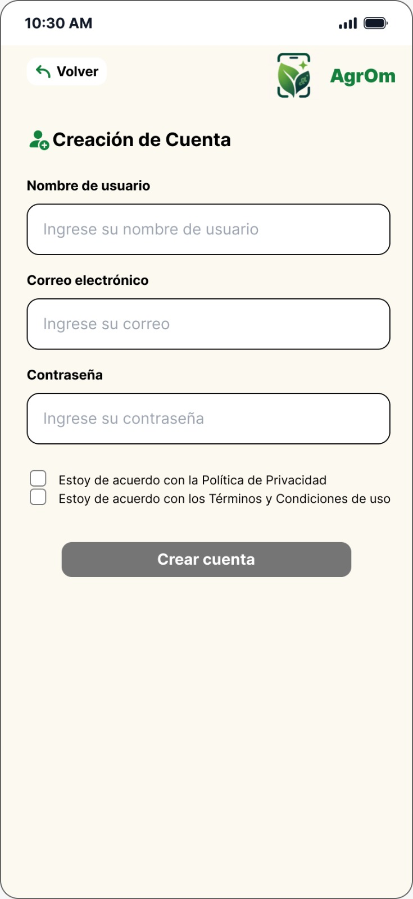
Crea una cuenta para comenzar a organizar y cuidar tus cultivos.
Empieza con AgrOmToma una fotografía de la hoja que presenta manchas o cambios de color.
Observa la planta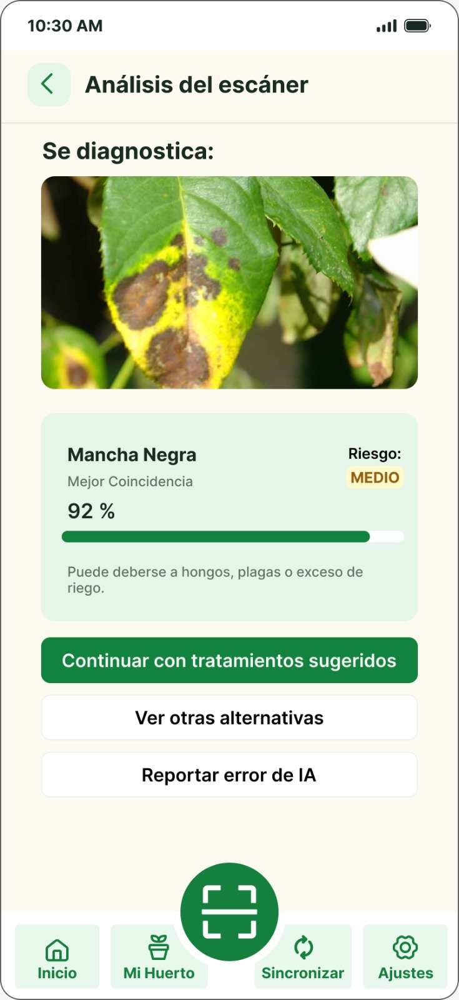
Revisa el resultado orientativo y las opciones de cuidado para tu planta.
Conoce el resultado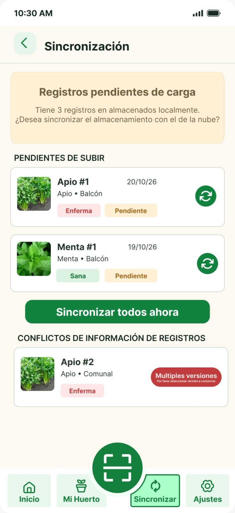
Guarda registros en tu dispositivo y sincronízalos cuando tengas conexión.
Mantén tus datos al día¿Quieres explorar más pantallas? Conoce la aplicación →
PENSADO PARA TI
AgrOm está pensado para tres grupos de personas que cuidan cultivos en diferentes espacios.
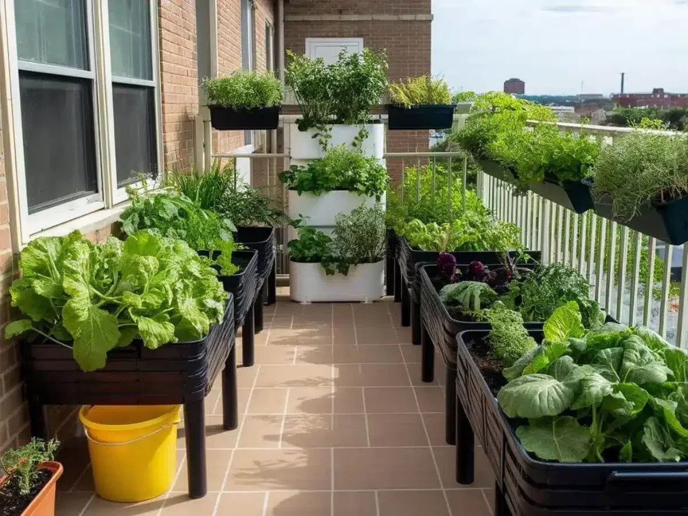
Para quienes cultivan en jardines, terrazas y biohuertos y desean reconocer qué ocurre con sus plantas.
Diagnósticos sencillos y seguimiento personal.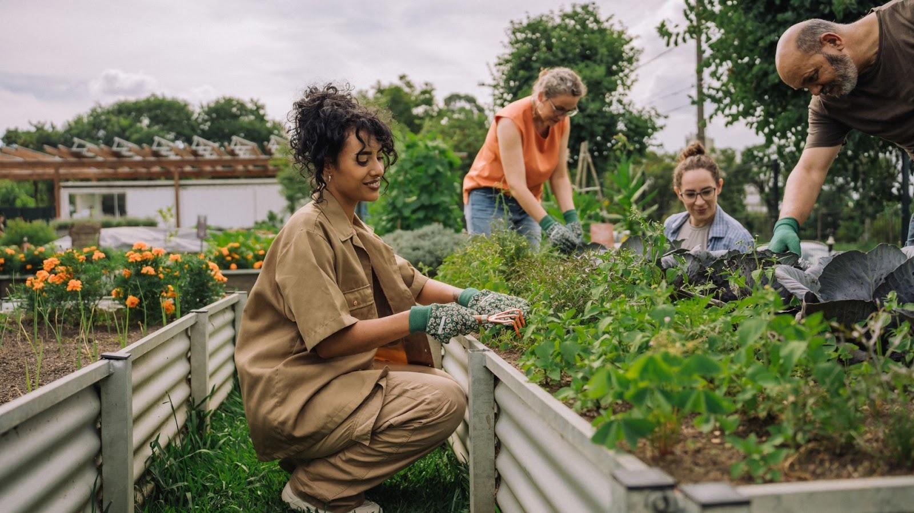
Para personas que coordinan el cuidado de varios cultivos y necesitan organizar observaciones compartidas.
Más orden en las revisiones y alertas.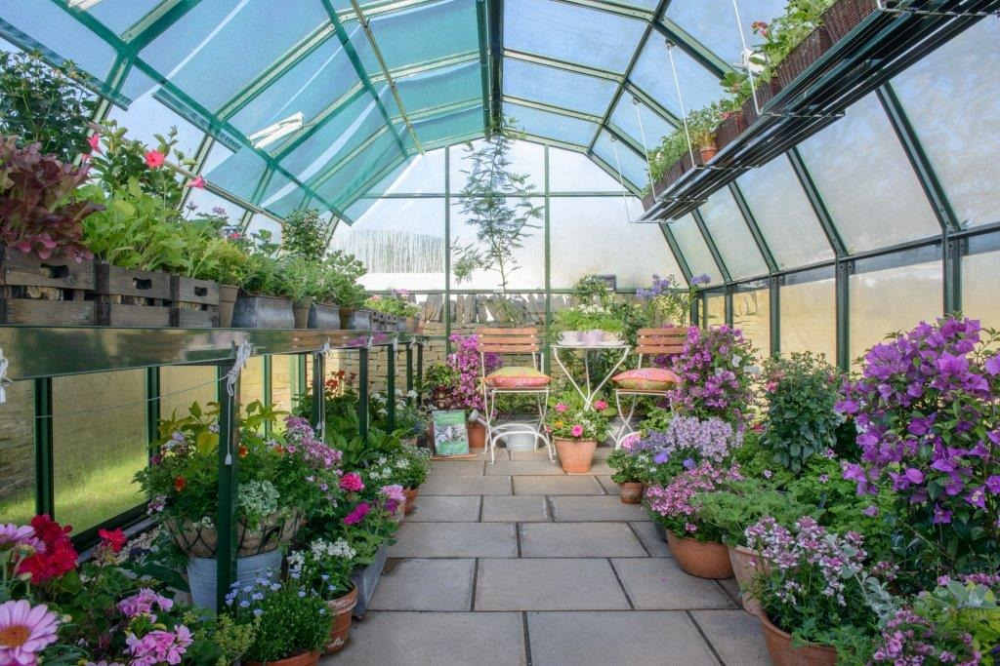
Para encargados de revisar muchas plantas y encontrar señales de problemas antes de ofrecerlas al público.
Inspecciones ágiles e historial de plantas.CONOCE LA APLICACIÓN
Descubre cómo se ve AgrOm desde tu celular. Revisa tus plantas, consulta posibles problemas y organiza tus cuidados en un solo lugar.
ASÍ SE VE AGRÓM
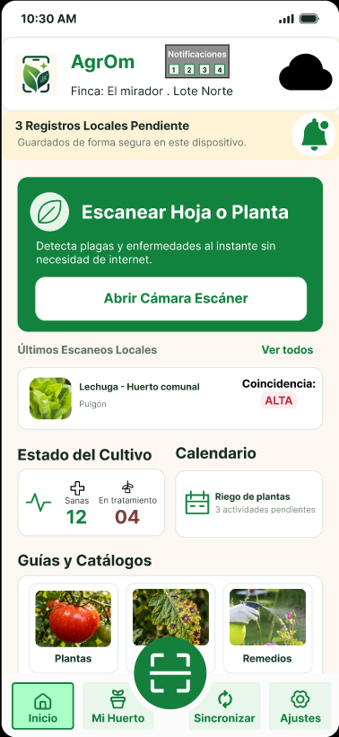
Usa las flechas para recorrer las pantallas.
ELIGE TU OPCIÓN
Conoce las opciones de AgrOm y elige la que mejor se adapte a tus necesidades.
Ideal para comenzar
S/ 0 / mes
Para quienes cuidan más cultivos
S/ 20 / mes
Para viveros y comunidades
A consultar
* Precios y características referenciales del prototipo académico. Deben confirmarse antes de su contratación.
PREGUNTAS FRECUENTES
Resuelve tus dudas y conoce mejor la aplicación antes de comenzar.
Puedes escribirnos desde la sección de contacto.
Ir a contactoAgrOm es una aplicación móvil de AgroNova que te ayuda a revisar el estado de tus plantas, consultar diagnósticos orientativos y organizar su seguimiento.
Está dirigida a personas con huertos en casa, administradores de huertos comunitarios y encargados de viveros o centros de jardinería.
Con una fotografía de la hoja, AgrOm ofrece información orientativa sobre posibles plagas o enfermedades para apoyar el cuidado del cultivo.
AgrOm contempla el registro local de información, de modo que puedas seguir anotando inspecciones cuando tengas conectividad limitada.
No. Los resultados son orientativos. Para problemas graves o persistentes, es importante consultar a un profesional.
Puedes visitar la sección de descarga de esta página para acceder a Google Play o App Store. Los enlaces directos a AgrOm se configurarán con sus fichas oficiales.
HABLEMOS DE AGRÓM
¿Tienes un huerto en casa, participas en un proyecto comunitario o trabajas en un vivero? Cuéntanos qué te gustaría encontrar en AgrOm.
Tu opinión nos ayuda a mejorar nuestra propuesta móvil.
Déjanos tus datos y cuéntanos qué necesitas.